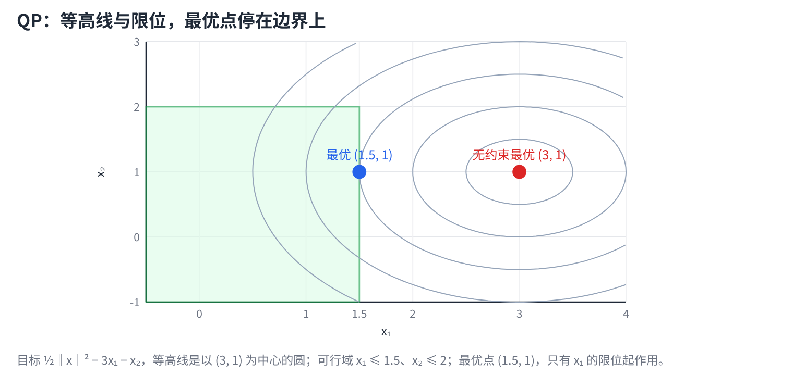
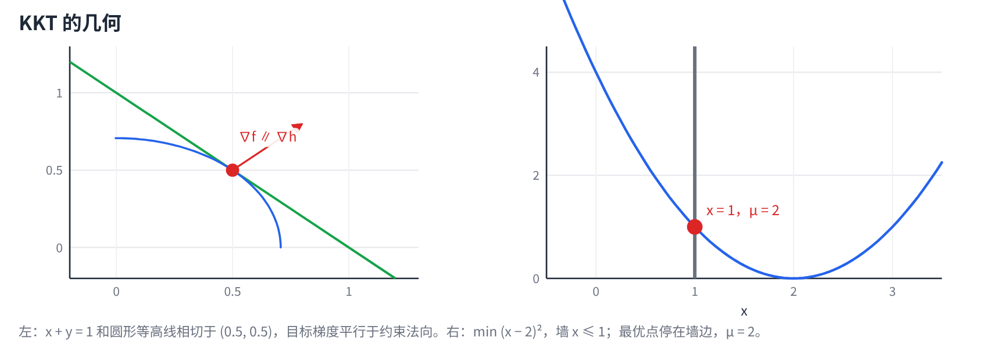
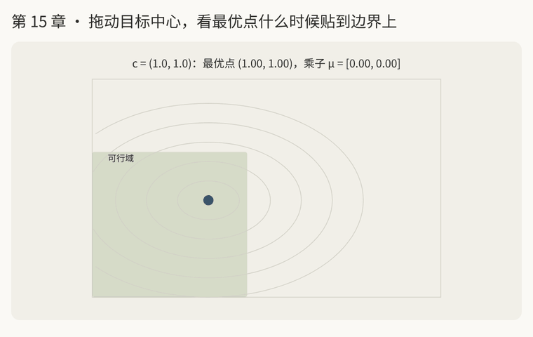

第 15 章 · 约束与凸优化：拉格朗日乘子、KKT、凸性与 QP
本地运行
git clone https://github.com/wikieden/math-and-eval-stats
cd math-and-eval-stats/code/notebooks
pip install jupyterlab torch numpy
jupyter lab ch15_constrained_convex_qp.ipynb也可以下载后直接用 VS Code 打开 .ipynb 运行。需要 GPU 的章节在 Colab 里选「代码执行程序 → 更改运行时类型 → GPU」。
本章回答：带约束的最优化怎么解？"拉格朗日乘子"到底在乘什么？KKT 条件里的"互补松弛"是什么意思？为什么机器人的 MPC、全身控制、带关节限位的 IK 最后都写成 QP？
讲解日期：2026-11-25 · 上一章：第 14 章 无约束优化 · 下一章：第 16 章 蒙特卡洛与采样
对应原文：MMLmaterials/text/books/mml-book.txt§7.2 约束优化与拉格朗日乘子 L13040 起（拉格朗日函数 L13078、对偶 L13090–L13104）、§7.3 凸优化 L13222 起；Boydmaterials/text/books/boyd-convex-optimization.txt§4.4 二次规划、§5.5.3 KKT 条件
本章缩写：λ（lambda）= 等式约束的乘子；μ（mu）= 不等式约束的乘子；KKT = Karush–Kuhn–Tucker（三位数学家的姓：约束优化的最优条件）；QP = Quadratic Programming（二次 / 规划）；P、q、G、h、A、b = QP 标准形里的矩阵和向量；MPC = Model Predictive Control（模型 / 预测 / 控制）；IK = Inverse Kinematics（逆运动学）；SLSQP = Sequential Least SQuares Programming（序列 / 最小二乘 / 规划：scipy 的一个约束优化器）。全部缩写见 附录 · 缩写与术语表
讲解
第一步：等式约束：最优点处，目标的梯度和约束的法向平行（2026-11-25）
类比：沿一条山路走，找最低点。 山路上的最低点，一定是"山坡的下坡方向正好垂直于路"的地方：再往前往后走都是上坡。也就是说，目标函数的梯度和山路的法向平行。
拉格朗日函数 \(L = f + \lambda h\)（MML L13078），对 x 和 λ 求导都令为 0。
例子：\(\min x^2 + y^2\) s.t. \(x + y = 1\)：
此时目标的梯度 [1, 1] 和约束的法向 [1, 1] 平行。三个方程是线性的，直接解一个 3×3 方程组。
λ 的意思：约束右边从 1 变成 1 + δ，最优值大约变化 −λδ（这里最优值 \((1+\delta)^2/2\)，导数 1 = −λ）。λ 是"约束的影子价格"。
一句话：等式约束的最优点满足 ∇f + λ∇h = 0；λ 衡量约束放松一点，最优值能改善多少。
第二步：不等式约束：KKT 与互补松弛（2026-11-25）
类比：墙边的球。 球想滚到谷底；如果谷底在墙外，球就停在墙边，墙给它一个推力（乘子 μ > 0）；如果谷底在墙内，墙根本碰不到球，推力为 0。
KKT 条件（Boyd §5.5.3）：
| 条件 | 写法 |
|---|---|
| 驻点 | \(\nabla f + \mu\nabla g = 0\) |
| 原始可行 | \(g(x) \le 0\) |
| 对偶可行 | \(\mu \ge 0\) |
| 互补松弛 | \(\mu\cdot g(x) = 0\)：要么约束取等号，要么乘子为 0 |
例子：\(\min(x - 2)^2\) s.t. \(x \le 1\)。不受限时最优点 x = 2，在墙外；所以停在 x = 1，驻点条件 \(2(1 - 2) + \mu = 0\) → μ = 2 ≥ 0。约束取等号、μ > 0，互补松弛成立。
一句话：KKT = 驻点 + 可行 + μ ≥ 0 + 互补松弛；起作用的约束才有正的乘子。
第三步：凸性：局部最优就是全局最优（2026-11-25）
类比：碗里只有一个最低点，马鞍上到处是"看起来最低"的假象。
凸函数：两点连线永远在函数图像上方；二次函数 \(\frac12x^\top Px\) 凸 ⇔ P 半正定（第 11 章）。凸集：两点连线永远在集合里（线性等式、线性不等式定义的区域都是凸集）。凸函数在凸集上的局部最优就是全局最优（MML §7.3），KKT 条件对凸问题是充要的。
| P | 特征值 | 凸？ |
|---|---|---|
| diag(1, 10) | 1, 10 | 是 |
| [[1, 2], [2, 1]] | −1, 3 | 否 |
一句话：凸目标 + 凸约束 ⇒ 局部最优就是全局最优，KKT 充要；判二次目标凸不凸，看 P 的特征值。
第四步：QP：机器人控制里最常见的优化问题（2026-11-25）
QP 标准形：
P 半正定时是凸 QP，有很快、很可靠的求解器（OSQP、qpOASES、HPIPM）。
例子：\(\min\frac12\|x\|^2 - 3x_1 - x_2\)，约束 \(x_1 \le 1.5\)、\(x_2 \le 2\)：
- 不受限的最优点是 (3, 1)；
- x₁ = 3 超了限位 1.5，x₂ = 1 没超；
- 把 x₁ ≤ 1.5 当等式（起作用的约束），解 KKT：x = (1.5, 1)，乘子 [1.5, 0]（第二个约束不起作用，乘子 0：互补松弛）；
- scipy 的 SLSQP 求出来也是 (1.5, 1)。
这就是"有效集法"的思路：猜哪些约束起作用，当等式解，再检查乘子是否 ≥ 0、其余约束是否满足。
机器人里哪些问题是 QP：
| 问题 | x | 目标 | 约束 |
|---|---|---|---|
| 带限位的速度 IK | 关节速度 \(\dot q\) | \(\|J\dot q - \dot x_{\text{目标}}\|^2 + \lambda\|\dot q\|^2\) | 关节速度、位置限位 |
| 线性 MPC | 未来 N 步的控制量 | 跟踪误差 + 控制代价（二次） | 动力学（线性等式）、执行器上下限 |
| 全身控制（WBC） | 关节加速度、接触力 | 多个任务的加权误差 | 动力学、摩擦锥（线性化）、力矩限 |

图 15-1 · 同心圆是目标的等高线（中心 (3, 1)），阴影是可行域 x₁ ≤ 1.5、x₂ ≤ 2；最优点 (1.5, 1) 落在 x₁ = 1.5 这条边上
图 15-2 · 左：等式约束 x + y = 1 和圆形等高线相切于 (0.5, 0.5)；右：一维的墙 x ≤ 1，μ = 2 把球挡在墙边场景代码：用 OSQP 解一个标准形 QP（真实库的写法；本书环境没装 osqp，没跑过）：
import osqp, numpy as np, scipy.sparse as sp
P = sp.csc_matrix(np.eye(2)); q = np.array([-3.0, -1.0])
A = sp.csc_matrix(np.eye(2)); l = np.array([-np.inf, -np.inf]); u = np.array([1.5, 2.0]) # OSQP 写成 l ≤ Ax ≤ u
prob = osqp.OSQP(); prob.setup(P, q, A, l, u, verbose=False)
print(prob.solve().x) # [1.5, 1.0]
一句话：凸 QP 有可靠的快速求解器；带限位的 IK、线性 MPC、全身控制都写成 QP，每个控制周期解一次。
动画演示：拖动目标中心，看最优点什么时候贴到边界上

可交互版：animations/15-constrained-convex-qp.html（滑块调无约束最优点的位置和限位）。
怎么看：
- 同心圆等高线的中心是无约束最优点，灰色阴影是可行域（第四步）；
- 中心在可行域里时，最优点就是中心，乘子都是 0；
- 把中心拖出去：最优点贴到边界上，被挡住的那个约束的乘子变成正数（第二步）；
- 拖到角落外：两个约束同时起作用，两个乘子都 > 0。
练习与作答记录
题 1（第一步）：\(\min x^2 + 2y^2\) s.t. \(x + y = 3\)。写出拉格朗日条件，求 x、y、λ。
作答：（待作答）
题 2（第二步）：\(\min(x - 2)^2\) s.t. \(x \le 5\)。最优点和乘子各是多少？哪一条 KKT 条件解释了乘子的值？
作答：（待作答）
题 3（第四步）：一辆一维小车，状态是位置，控制是速度 u，每步 \(p_{k+1} = p_k + 0.1u_k\)，要在 3 步内从 0 走到 1，代价 \(\sum u_k^2\)，速度限位 \(|u_k| \le 4\)。把它写成 QP 标准形：x 是什么？P、q、A、b、G、h 各是什么？（不用解）
作答：（待作答）
口诀
山路最低点，坡度垂直于路，梯度和法向平行；
λ 是影子价格，约束放松一点赚多少；
墙边球：可行、μ 非负、驻点、互补松弛；
凸则局部即全局，限位 IK、MPC、全身控制都是 QP。
本章复习卡片
ST60（拉格朗日条件与乘子的意义）、ST61（KKT 四个条件、互补松弛）、ST62（QP 标准形与机器人里的 QP 问题）。练习做完后，按答错、卡住的地方补上。
附录 · 延伸阅读
留给以后深入学习用，不影响本章主线。★ 是建议先读的。
推荐阅读
| 读什么 | 读哪里 | 读它为了什么 |
|---|---|---|
| ★ MML | §7.2–7.3 L13040–L13723 | 拉格朗日乘子、对偶、凸优化入门 |
| ★ Boyd | §4.4（QP）、§5.5.3（KKT） | 标准形、KKT 的严格陈述 |
| Boyd | 第 10–11 章 | 等式约束的牛顿法、内点法：QP 求解器内部怎么做 |
| 《机器人运控与强化学习》第 15 章 | 全章 | MPC 在机器人上的用法 |
数学原理
- 拉格朗日条件的几何：最优点处，在可行方向（约束的切空间）上目标不再下降，所以 ∇f 垂直于切空间，即平行于约束法向 ∇h。
- 乘子的敏感度意义：最优值 p*(c) 对约束右端 c 的导数等于 −λ（对凸问题严格成立），叫影子价格。
- 对偶：\(g(\lambda) = \min_x L(x, \lambda)\) 是原问题最优值的下界；凸问题在温和条件下对偶间隙为 0（MML L13090–L13104）。
- 有效集法：在"哪些约束起作用"的组合上搜索；每次把起作用的约束当等式解一个线性 KKT 系统，乘子为负就把那个约束移出，违反的约束就加进来。
公式清单
| 公式 | 意思 |
|---|---|
| \(L = f + \lambda h + \mu g\) | 拉格朗日函数 |
| \(\nabla f + \lambda\nabla h + \mu\nabla g = 0\) | 驻点 |
| \(g \le 0,\ \mu \ge 0,\ \mu g = 0\) | 可行、对偶可行、互补松弛 |
| \(\min\frac12x^\top Px + q^\top x\) s.t. \(Gx \le h,\ Ax = b\) | QP 标准形 |
代码对照：把本章的数字用代码算一遍
代码在仓库本地
math-and-eval-stats/solutions/chapter-code/ch15_constrained_qp.py，配套测试tests/test_ch15.py：
bash cd math-and-eval-stats/solutions/chapter-code uv run python ch15_constrained_qp.py uv run pytest tests/test_ch15.py
讲义 ↔ 代码：
| 讲义 | 公式 | 写法 | 跑出来 |
|---|---|---|---|
| 第一步 等式约束 | 3×3 KKT 线性方程组 | equality_kkt() |
x = y = 0.5，λ = −1 |
| 第二步 不等式约束 | 驻点求 μ | inequality_kkt() |
x = 1，μ = 2 |
| 第三步 凸性 | P 的特征值 | is_convex_quadratic(m) |
True / False |
| 第四步 QP | 有效集手算 | qp_active_set() |
(1.5, 1)，乘子 [1.5, 0] |
| 第四步 核对 | SLSQP | qp_scipy() |
(1.5, 1) |
关键几行：
k = np.array([[2, 0, 1], [0, 2, 1], [1, 1, 0]]) # [∇²f ∇h; ∇hᵀ 0]：KKT 矩阵
x, y, lam = np.linalg.solve(k, [0, 0, 1]) # 驻点 + 约束一次解出
cons = {"type": "ineq", "fun": lambda x: H_QP - G_QP @ x} # scipy 约定 fun(x) ≥ 0
minimize(f, np.zeros(2), constraints=[cons], method="SLSQP")
代码里才看得到的 3 件事：
- KKT 矩阵的结构：左上是目标的 Hessian，右上 / 左下是约束的雅可比，右下是 0。它不是正定的（是"鞍点矩阵"），不能用 Cholesky 解。
- scipy 的不等式约定是 ≥ 0：要表达 Gx ≤ h，就写
h − Gx ≥ 0；OSQP 又是 l ≤ Ax ≤ u。换求解器时先查约定。 - λ 的符号取决于写法：L = f + λh 时 λ = −1；写成 L = f − λh 时 λ = +1。只要前后一致，敏感度的意义不变。
自己改一改（不影响练习答案）：
- 把 QP 的限位改成 x₁ ≤ 1.5、x₂ ≤ 0.5，两个约束都起作用，手算乘子，再用
qp_scipy核对。 - 把等式约束改成 x + y = 2，λ 变成多少？最优值变了多少，和 −λ 对得上吗？